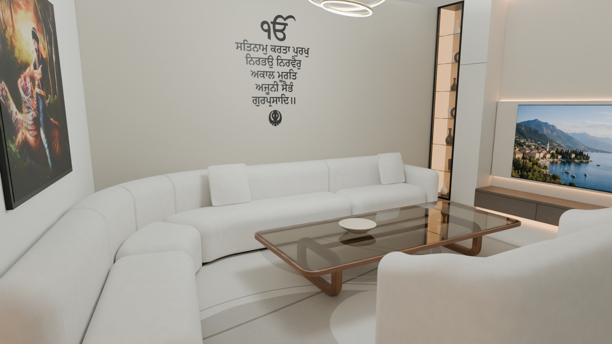
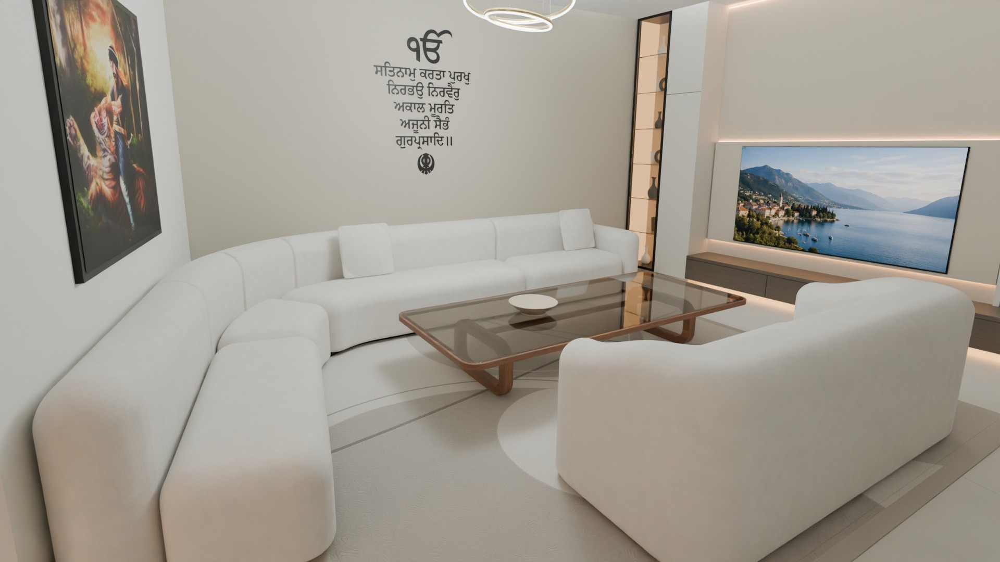
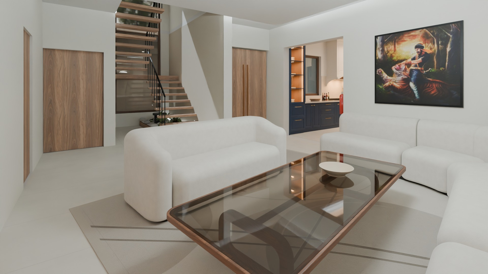
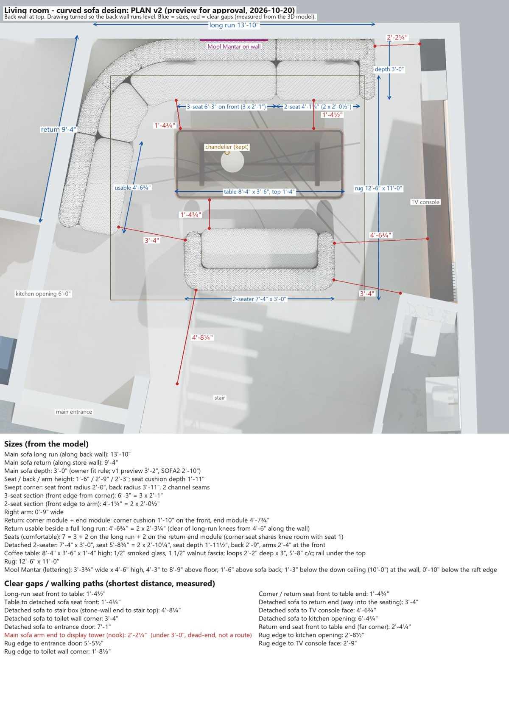

Approved designs, October 2026: the living room and the kitchen. Tap any photo for full 4K. Move around inside the kitchen 360 with your finger.
Curved ivory sofa with the Mool Mantar above it, a matching two-seater, a smoked-glass table with walnut legs, and the Hari Singh Nalwa painting on the store wall.




Option C: gas in the porch-wall corner, so you can see the lobby while cooking, navy lower cabinets, ivory uppers, silver smart sink under the window. Choose views 1–4 at the top.
Open kitchen 360 full screen| Main sofa | 13'-10" on the back wall + 9'-4" on the store wall, depth 3'-0", seat 1'-6" high · 7 comfortable seats |
| Two-seater | 7'-4" × 3'-0" |
| Coffee table | 8'-4" × 3'-6", 1'-4" high, smoked glass, walnut edge and legs |
| Rug | 12'-6" × 11'-0" |
| Mool Mantar | 3'-4" wide × 4'-6" high, 4'-3" to 8'-9" above the floor |
| Painting | 4'-0" × 4'-0" on the store wall |
| Ceiling | 11'-0" slab, down ceiling about 10'-0" |
| Walkways | 3'-4" or more everywhere · knee room to the table 1'-4½" |